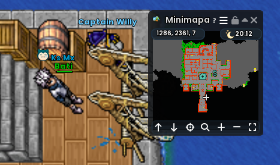
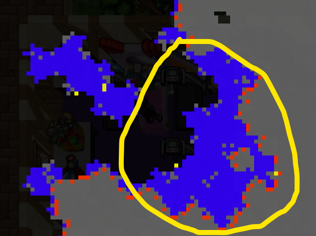

Lucky Amulet Quest
Guía consolidada de Captain Willy, el Valentine Gold Token, la entrada con Dive y el puzzle del Lucky Amulet.
¿Qué hace el Lucky Amulet?
Permite cargar un Held X-Lucky cuyo efecto se aplica de forma global a tus Pokémon. Dentro del amuleto, ese X-Lucky funciona aproximadamente al 50% de su efectividad normal.
Requisitos y preparación
- Nivel 250 o superior.
- Pokémon con Dive para acceder a la zona submarina.
- Un Pokémon capaz de derrotar Tentacruel normales para conseguir el objeto de la quest.
Orden correcto de la quest
La cadena se completa en este orden: primero debes iniciar la misión con Captain Willy, después conseguir el Valentine Gold Token de los Tentacruel, volver con Willy para entregarlo y, finalmente, acceder al área submarina donde se encuentra el puzzle.
Encuéntralo en el puerto de Olivine, en la posición mostrada abajo. Hablar con él inicia esta parte de la quest.
Ve a la zona marcada y derrota Tentacruel normales hasta obtener el Valentine Gold Token. Esta misma ruta conduce posteriormente hacia la entrada del Lucky Amulet.
Entrega el Valentine Gold Token. Después de completar esta etapa queda liberado el acceso que necesitas para continuar hacia el puzzle.
Continúa por la ruta submarina indicada hasta llegar al área del puzzle.
¿Dónde está Captain Willy?

Referencia visual de la ubicación de Captain Willy en el puerto de Olivine.
Zona de Tentacruel y entrada

Aquí se buscan los Tentacruel para conseguir el Valentine Gold Token. Tras entregarlo a Captain Willy, esta ruta se utiliza también para avanzar hacia el puzzle.
Zona recomendada para cazar Tentacruel

La zona marcada en amarillo es la recomendada para cazar Tentacruel normales mientras buscas el Valentine Gold Token.
Puzzle del Lucky Amulet
Una vez entregado el objeto a Captain Willy y liberado el acceso, entra por la ruta submarina y llega al puzzle. El puzzle tiene un límite de 60 minutos y admite hasta 3 jugadores simultáneos, cada uno en su propia instancia.
Esta es la nueva referencia visual del puzzle. La cuadrícula ayuda a seguir la posición y el recorrido dentro de la sala.
Transferir un X-Lucky
- Equipa el Lucky Amulet.
- Deja activo un Pokémon que tenga X-Lucky.
- En el NPC de transferencia elige mover el X-Lucky al amuleto.
- Revisa el tier antes de confirmar.
Solo X-Lucky puede transferirse de esta forma y el nuevo Held debe ser de tier superior al ya colocado. La transferencia retira el Held del Pokémon.
Retirar el Held
El NPC de eliminación de Held también puede retirar el X-Lucky del Lucky Amulet. El Held vuelve como objeto conservando su tier actual. Conviene retirarlo antes de reemplazarlo.